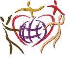

پذيرش > سایت نوشته ها > به نام زن آزادی برابری / عاطفه یوسفی/ ادوار نیوز


 به نام زن آزادی برابری / عاطفه یوسفی/ ادوار نیوز به نام زن آزادی برابری / عاطفه یوسفی/ ادوار نیوز
26 فروردین 1386 - - نسخه قابل چاپ
تلاش انسانها براي رسيدن به جهاني که قوانين حاکم بر آن ، محصول اراده ي مستقيم آنان در تعيين آزادانه ي سرنوشتشان باشد ، درقلمرو تاريخ نوين بشر به خلق جنبشهاي بزرگي منجر شده است . نيروي ذخيره شده در اين جنبشها ، اگر مسلح به ايده هاي پوينده ي شعور ترقي خواه انسان باشد ، مهارناپذير است . چرا که رکن مادي ساختمان اين جنبشها را تجربه ي عمومي نبرد با بي عدالتي و استبداد تشکيل مي دهد .
زن ، با اعتراض به موقعيت تبعيض آميز اجتماعي و تعريف ناعادلانه از هويت انساني اش ، نيروي مادي يکي از بزرگترين و جهاني ترين اين جنبشها را تشکيل داده است . او همچون ديگر قربانيان مناسبات عالمگير پدر سالاری ، در برابر ستمي که ملزومات حفظ اين مناسبات بر او روا مي دارد ، مقاومت کرده و اکنون تصميم حمله به آن را در خودآگاه عاصي خود گرفته است .
امروز کمیسیون زنان دفتر تحکیم و کمیته زنان سازمان دانش آموختگان ایران همصدا با جنبش زنان ایران و تمام زنان مبارز جهان ، به قوانين تبعيض آميز و زن ستيزانه حاکم اعتراض کرده و بر عليه نظام اجتماعي پوسيده اي که زن را قرباني خشونت خانگي ، قتل ناموسي ، تسليم در برابر وسوسه ي خود سوزي و ديگر اشکال و نتايج بردگي زن مي کند ، مبارزه می کند .
ما خواهان برابري بي قيد وشرط زنان و مردان و لغو هرگونه نمود ستم و تبعيض جنسيتي از تمامي شئون زندگي اجتماعي آنانیم
مروري بر وقايع مربوط به زنان در يک سال گذشته نشان مي دهد که علاوه بر تداوم تبعيض عليه زنان، از يکسو سياستهاي دولتي مبتني بر خانه راندن زنان شدت گرفته و از سوي ديگر فشار حاکميت بر فعالان جنبش مستقل زنان از فيلترينگ گسترده سايتهاي زنان گرفته تا تهديد، ممنوع الخروج کردن، احضار، بازجويي و بازداشت آنان به طور چشمگيري افزايش يافته است.
عليرغم همه فشارها و مخالفتها، جنبش زنان ايران هم اينک در يکي از پويا ترين و فعال ترين دوران هاي خود در طول تاريخ معاصربه سر مي برد و مجدانه طرح خواسته هاي زنان را در قالبهايي به مراتب سازماندهي شده تر از گذشته پي مي گيرد
با گذشت هفت ماه از آغاز به کار کمپین یک میلیون امضاء برای تغییر قوانین تبعیض آمیز، بارها اعضای کمپین با برخوردهای خشونت آمیز نیروهای امنیتی مواجه شده اند و این درحالی است که هیچ مرجع قانونی برای بازداشت کسانی که به جمع آوری امضاء می پردازند در قوانین جاری ما وجود ندارد. روند دستگیری ها و نحوه برخورد نیروهای امنیتی نسبت به رفتار کاملا مدنی فعالان کمپین یک میلیون امضاء بیانگر گسترش فشارها و محدودیت هایی است که نسبت به تمامی حرکت های قانونی و مسالمت آمیز اعمال می شود.
روز دوشنبه سیزدهم فروردین 1386، گروه هایی از اعضای کمپین یک میلیون امضاء به همراه خانواده های خود در برخی از پارک های شهر تهران جمع شده بودند تا ضمن برگزاری مراسم سیزده بدر، به جمع آوری امضاء از هموطنان شان بپردازندآن طور که همه می دانیم جمع آوری امضاء و طومار به عنوان مسالمت آمیزترین روش ممکن برای نظرخواهی از شهروندان نه تنها هیچ منع قانونی ندارد بلکه در کشورهای متعددی برای رفع تبعیض ها سابقه ای دیرینه دارد. اما متاسفانه در این روز 5 نفر از اعضای کمپین که در پارک لاله تهران توسط نیروهای امنیتی دستگیر و به بازداشتگاه وزرا منتقل شدند.
روز سه شنبه سه نفر از بازداشت شدگان (سارا ایمانیان، همایون نامی و سعیده امین) با سپردن ضمانت در دادگاه انقلاب، آزاد شدند، اما متاسفانه دو تن دیگر یعنی ناهید کشاورز و محبوبه حسین زاده به زندان اوین منتقل شدند و تاکنون نیز از آزادی آنان امتناع می شود.
بازداشت شدگان (ناهید کشاورز و محبوبه حسین زاده ) را در روز اول به بند یک زندان اوین منتقل کرده اند، بندی که به «بند تنبیهی» یا «بند بازسازی نشده» شهرت دارد. این بند از زندان اوین بدترین بخش زندان است. در این بند زنان بسیاری بدون احساس مسئولیت از سوی مسئولان زندان اوین از یک طرف و بدون هیچ امیدی به روزنه ای در زندگی خود، در بدترین وضعیت ممکن بسر می برند. متاسفانه شرایط این بند و زنان ساکن آن جا تا به حدی دردناک و دشوار است که زنان زندانی نه تنها زندگی دیگران بلکه زندگی خود را نیز در خطر و انهدام و نیستی قرار داده اند و در این میان به نظر می رسد مسئولان حتا به تماشای نابودی آنان نمی نشینند چه برسد به تلاش برای ترمیم و اصلاح وضعیت آنان
تجسم جهاني بي زندان، جهاني كه سهم همه از خيابان هاي زمين يك اندازه است؛ تجسم كتاب قانوني كه جنسبت در آن تبصره نيست ؛ تجسم جهاني ديگر بي صداي بمب ؛بي ضربه باتوم، بي كودك گرسنه، خالي از زن كتك خورده ... تصوير جهان سبزي كه تبر با دست و درخت بيگانه است و گرسنگي در تاريخ كز كرده... تجسم دنيايي كه برابري شرط بقاست در آيين هر قبيله و هر انسان آيينه اي است در برابر ديگري تا تكثير شود برابري ... . تصوير خود و فرزندانمان را خواب ديده بوده بوديم خواب ديده بوديم سال ها و خواب خوش بود حتي در ميان ديوارهاي تازه رنگ خورده ي اوين. برابري روياي همه ما بود كه اتهامي شد آنچنان بي عدل .... آه اگر اين قوانين كمي عادل بودند.
در خبرها دیده ایم که براساس دستورالعمل جديدي كه در پايان سال ۸۵ و همزمان با ترم دوم تحصيلي دانشگاهها، در دانشگاه شاهرود تصويب وبه دانشجويان اعلام شد، دانشجويان بايد درنحوه پوشيدن لباس و ارتباط با يکديگر تجديد نظركنند.
براساس اين دستورالعمل پوشيدن لباس كوتاه و نازك وهمچنين استفاده از لوازم آرايش و ارتباط دانشجويان دختر و پسر با يكديگر از موارد تخلف تلقي شده و به شدت با آن برخورد مي شود.
متن کامل مصوبه “شوراي فرهنگي دانشگاه” شاهرود بر روي دو تابلوي بسيار بزرگ در مقابل در اصلي دانشگاه و در بوستان دانشگاه نوشته شده است. مسوولين دانشگاه دليل نوشتن اين موارد را برروي تابلو “آگاه شدن دانشجويان از مقررات جديد و سلب هرگونه بهانه ازآنان در هنگام مشاهده تخلف” و بر اساس مصوبه شوراي فرهنگي عنوان كرده اند.
سالار كيا معاون دادستان تهران نیز در اظهار نظری اخیرا گفته است: پرونده افراد بدحجاب دستگير شده در شعب خاص دادسرا رسيدگي ميشود
این طرح همزمان با اجراي طرح برخورد با بدحجابي از ارديبهشت ماه در تهران در شعب خاص در دادسرا پیگیری می شود.
طنز تلخ موجود در این گزارش بخشی است که ایشان تصريح می کنند: پوششهاي زننده معمولا توسط زنان خياباني صورت ميگيرد و لذا خانوادهها توجه كنند تا پوششهاي فرزندان آنها كه گاهي به صورت ناآگاهانه نيز ميباشد مانند اينگونه افراد نشود.
ارسال به
بالاترین
،
توییتر
،
فریندفید
،
فیسبوک
در همين بخش :
 یک خبر تلخ؟ یک قانونشکنی؟ یک تصمیم بخشنامهای جدید؟ یک خبر تلخ؟ یک قانونشکنی؟ یک تصمیم بخشنامهای جدید؟
چرا بایست به سکسوالیته پرداخت؟ / نفیسه آزاد
آزارجنسی خانگی؛ «قربانی» نه، «نجات یافته»
زنان، بزرگترین بازندگان بهار عرب
سانسور از دیدگاه جنسیتی/الهه امانی
ديگر بخش ها :
طرح یک میلیون امضا
|
مقالات
|
سایت نوشته ها
|
اخبار
|
گزارش كمپين
|
گفت و گو
|
علیه سکوت
|
كوچه به كوچه
|
نامه های شما
|
گزارش ویژه
|
گفتگو با اعضا
|
ویژه سالگرد کمپین
|
تصویر برابری
|
دل آرام علی
|
تریبون
|
مقالات
|
تاریخ شفاهی
|
خارج از چارچوب
|
کتابخانه
|
درباره کمپین
|
کمپین در شهرها
|
کمپین در بند
|
صدای تغییر
|
ویژه 22 خرداد
|
لایحه حمایت از خانواده
|
گالری
|
عشا مومنی
|
امیر یعقوبعلی
|
خدیجه مقدم
|
راحله عسگری زاده و نسیم خسروی
|
پروین اردلان،جلوه جواهری، مریم حسین خواه، ناهید کشاورز
|
زینب پیغمبرزاده
|
سعیده امین، سارا ایمانیان، محبوبه حسین زاده، ناهید کشاورز و همایون نامی
|
احترام شادفر
|
نسیم سرابندی زاده،فاطمه دهدشتی
|
وبلاگ مهمان
|
پرونده خرم آباد
|
دستگیری ها
|
مریم مالک
|
پرستو اللهیاری
|
مهرنوش اعتمادی
|
سمیه رشیدی
|
Other Languages
|
همراهان
|
«فراخوان کمپین ده روز با بهاره هدایت»
| English
|